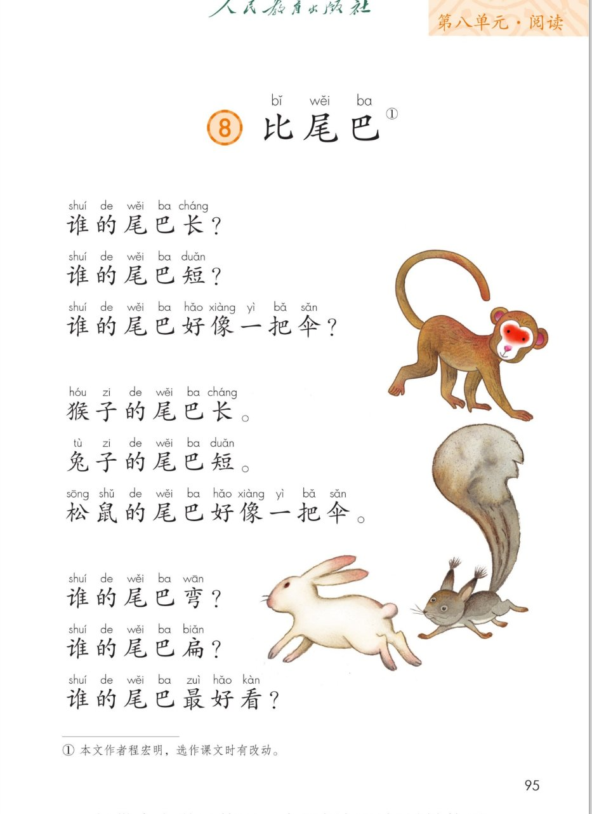
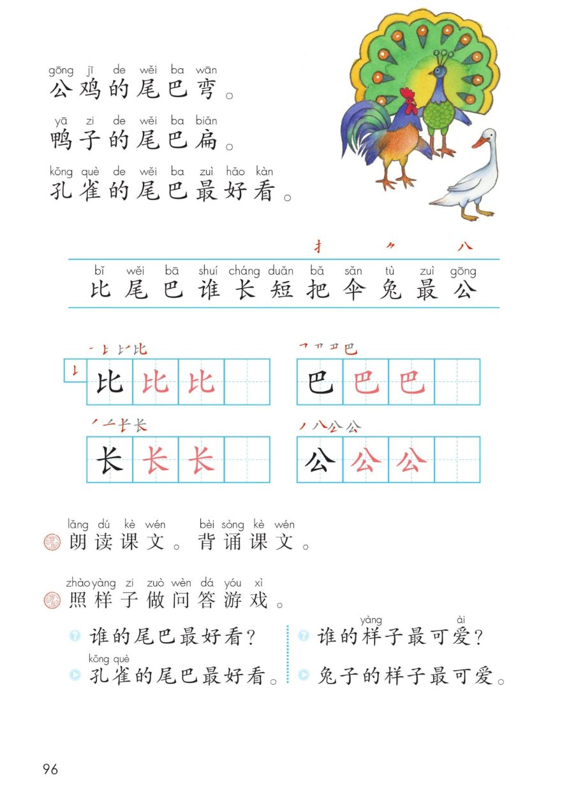

×
🔊 手机听不到声音怎么办？
① 先把手机
媒体音量调大 ，确认没开静音、没连蓝牙耳机；在微信里打开的，点右上角「⋯ → 用浏览器打开」。
② 还是没声音？到应用商店免费下载
Microsoft Edge 浏览器 （它自带朗读发声），用它打开本页面就能出声。
③ 换了 Edge 仍然没声音，说明这部手机的
硬件/系统不支持 网页朗读（多为老旧机型）；近几年买的新手机一般都能正常播放。
→ 打开声音自检
统编版 · 一年级上册 · 第八单元 · 阅读 · 课文8
⑧ 比 尾 巴
谁的尾巴长？谁的尾巴短？谁的尾巴好像一把伞？
一问一答 六种动物尾巴 三个新偏旁 闯关 8 题
这一课学什么： 把 12 行一问一答 的儿歌读顺、背下来；认识 11 个字，写好「比、巴、长、公」；
记住六种动物尾巴的特点，再照样子和同学做问答游戏 。🐒🐰🐿️
页面上每行的拼音是照课本标的，供参考，以课本和老师为准。
课本第 95~96 页 点一行读一行
读前小贴士： 课文一共 12 行 ，分成两组问答 ：
先连问 3 句，再连答 3 句；接着又连问 3 句，再连答 3 句。
问句 句末声音往上扬，答句 稳稳地说出来。❓➡️✅
🎵 全文连读
🔁 跟读模式（读完一行停一停）
💬 一问一答配对着读
🐢 放慢背一背（每行读两遍）
课后题① 朗读课文。背诵课文。 🎯 背诵三步：
① 跟着点读，一行一行读准；② 把 6 个问句 和 6 个答句 配成对；
③ 看着六种动物的样子，从头背到尾。
🔎 词语小发现： 「好像一把伞 」是把松鼠的大尾巴比作伞，一把 是数量词；
「最好看 」的「最 」表示比下来排第一，读的时候可以稍微重一点。☂️
课本第 95~96 页 点卡听读
🧩 配对记忆法： 左边一个问 ，右边一个答 ，正好 6 对。
试着盖住答句，看着问句自己说出来；也可以和同学一人问、一人答。🗣️
课本第 96 页识字条 点一张读一张
识字条 · 连起来读
比 尾 巴 谁 长 短 把 伞 兔 最 公 —— 识字条上方三个红字是新偏旁「扌 ⺈ 八 」
课本第 96 页 点卡听读
课本第 96 页田字格 先看笔顺，再动笔
✍️ 写字小提醒： 四个字都是独体字 ，写在田字格正中。
比 左右两半一样高，右边是「匕 」不是「七」；巴 最后一笔竖弯钩要托住上面；
长 的竖提压在竖中线上；公 上面的「八 」撇捺分开不连上。
课本上「黑字示范 → 两格红字描红 → 一格自己写」，一笔一笔慢慢来。
课本第 96 页课后题 点卡听读
课后题② 照样子做问答游戏。 🗣️ 玩法：
① 一人问「谁的……最……？」；② 另一人用「……的……最……」答完整；
③ 再换一个话题接着问。课本两组例子已经列在上面的卡片里，先照着读，再自己编。
下面两张「自己编」是练习示例，不是课文原文，说别的也可以。
👤 认识作者： 课本脚注写着「① 本文作者程宏明，选作课文时有改动」。
把动物的特点写成一问一答 ，读起来像和同学做游戏，难怪一读就记住。📖
点题目可以听题，点选项就判对错，答完自动算分
已经答 0 题，答对 0 题。
点图放大

第 95 页 · 课题 · 前九行 · 插图 · 脚注

第 96 页 · 后三行 · 识字条 · 田字格 · 课后题